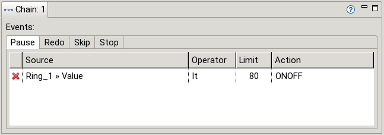

The Chain View contains properties concerning a chain. The Chain shown is the one selected in the (graphical) editor. A chain is also “selected” if its start event or one of its scan modules is selected.
For each chain pause conditions and events could be defined which influence execution of the scan (by pausing/redoing it, etc.).

To learn more about events, see here.
To learn more about pause conditions, see here.